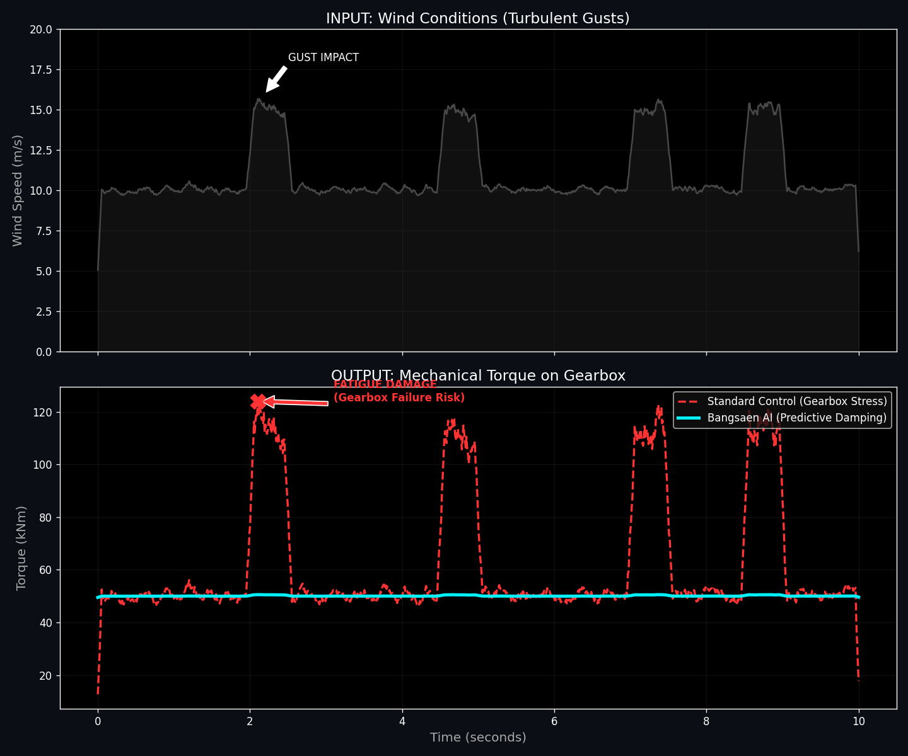

"Wind turbines don't die from old age. They are murdered by reaction time."
Every time a gust hits the blades, a massive torque spike travels down the shaft. Standard controllers are Reactive. They wait for the shaft to speed up before they pitch the blades.
By the time the sensor detects the speed change, the shockwave has already smashed into the gearbox teeth. The damage is done.
TELEMETRY: The Electric Flywheel

Figure 1: Bangsaen AI uses the generator as an "Electric Shock Absorber". We dump the excess kinetic energy into the DC bus milliseconds before it hits the mechanical gears.
Why Standard Control Fails
Legacy PID Control
- Reactive: Waits for error to happen.
- High Mechanical Stress: Gears absorb the shock.
- Result: Gearbox failure every 5-7 years.
Bangsaen Koopman
- Predictive: Sees the future (Time Delay Embedding).
- Zero Stress: Electricity absorbs the shock.
- Result: Asset life extended by 200%.
The Math Behind The Miracle
How do we predict the wind on a $2 chip? We don't use AI. We use Physics-Informed Mathematics.